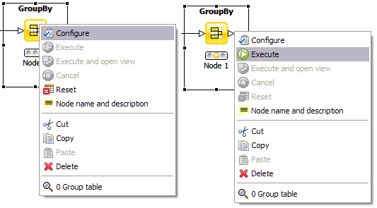
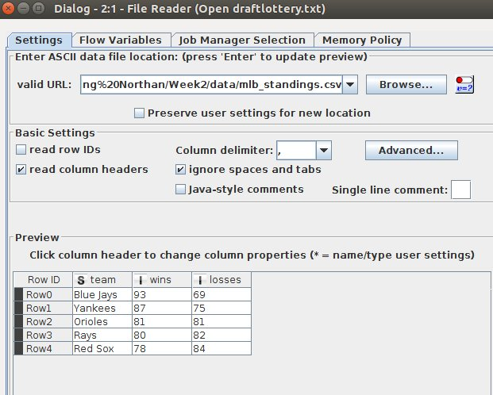

KNIME
- Leading open platform for data-driven innovation
- GUI based, Node based
- Install KNIME Analytics platform
- May have to install Java
- KNIME is similar to Rapidminer
- Installing/Getting started
KNIME Organization
- Work space is made of work flows
- Work flows are made of nodes
- Look at "SignificanceTests" work flow
- What is a node?
- What is node repository?
- Searching
- Install new nodes
- Help on nodes
Configuring Nodes
- Red - not configured properly
- Yellow - configured but has not been executed
- Green - executed successfully

|
- Right click on node to see menu
- Top option - configure (F6)
- Lower option(s) - view output
|
Trouble shooting
- Can you get KNIME working??
- Can you get "SignificanceTests" work flow running
File Reader configuration

|
Need to install image processing extension...
- Go to File->Install KNIME Extensions
- Expand "KNIME Community Contributions - Image Processing and Analysis"
- Install KNIME Image Processing 1.5.2